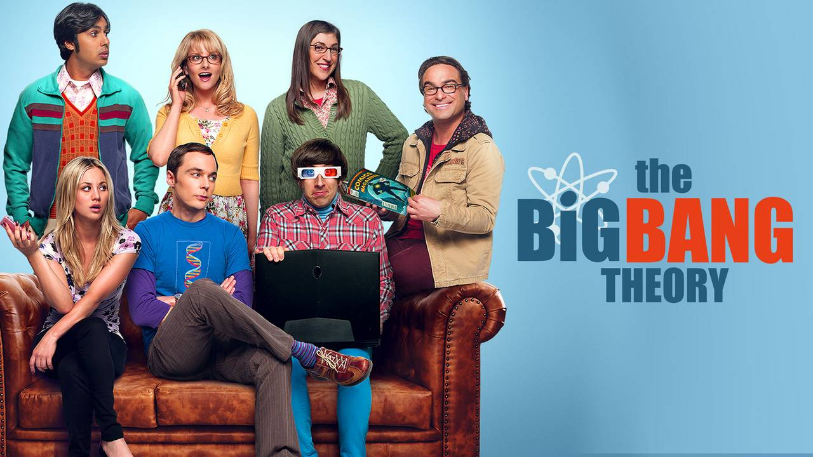

Merhaba, ben Aliye Sinem Battal. Kod yazmayı ve kendimi geliştirmeyi çok seviyorum. Çok tatlı bir köpeğim var, onunla vakit geçirmek de en çok keyif aldığım aktivitelerden biri.
The Big Bang Theory
The Big Bang Theory veya kısaca TBBT, Chuck Lorre ve Bill Prady tarafından yaratılmış Amerikan durum komedisi. İlk kez 24 Eylül 2007'de CBS'de yayınlanmıştır.